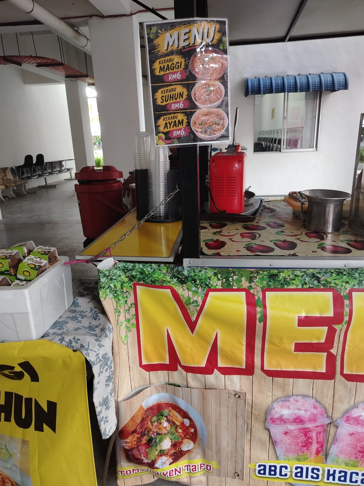
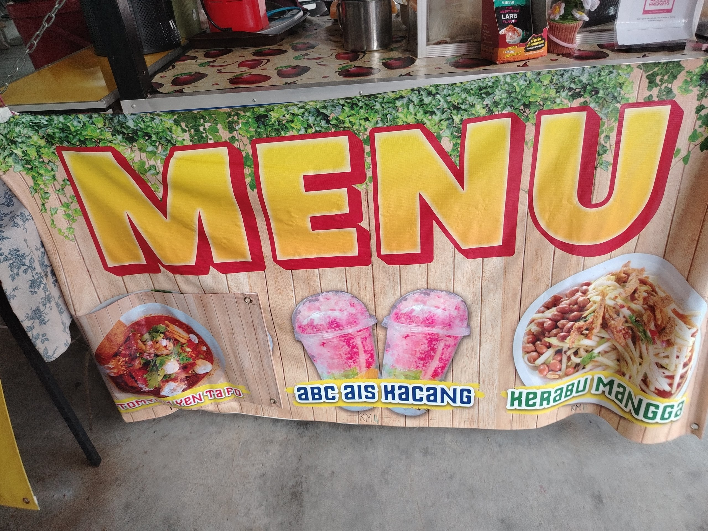
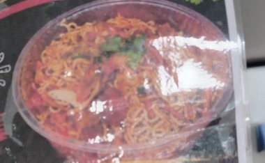
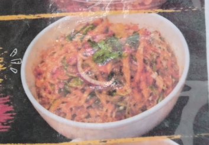
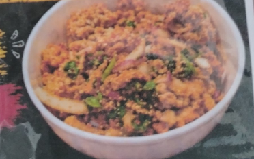
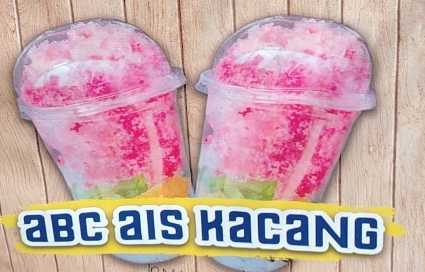

Welcome to the Personal Website


Gerai makanan di Unicity
Kedai ini merupakan salah satu gerai makanan yang menghidangkan pelbagai jenis makanan sehingga ke air.Antara menu yang ada adalah seperti Kerabu Maggie, Kerabu Suhun dan Kerabu ayam.Terdapat juga ABC atau dipanggil ais kacang. Menu-menu yang disediakan amatlah murah terutama bagi pelajar-pelajar di Uniciti ini.Bermula daripada RM3 sehingga RM6.Menu-menu ini sangat terkenal di Negeri Perlis dan sinonnim dengan pelbagai jenis mie yang lazat Malaysia Perlis
Menu-menu

KERABU MAGGIE

KERABU SUHUN

KERABU AYAM

ABC/AIS KACANG